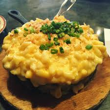

Macaroni and Cheese
Quick, easy, and tasty macaroni and cheese dish. Fancy, designer mac and cheese often costs forty or fifty dollars to prepare when you have so many expensive cheeses, but they aren't always the best tasting. This simple recipe is cheap and tasty.

Ingredients
- 1 (8 ounce) box elbow macaroni
- 1/4 cup of butter
- 1/4 cup all-purpose flour
- 1/2 teaspoon salt
- 2 cups of milk
- 2 cups shredded cheddar cheese
- Ground black pepper to taste
Steps
- Bring a large pot of lightly salted water to a boil. Cook elbow macaroni in the boiling water, stirring occasionally until cooked through but firm to the bite, 8 minutes.
- At the same time, melt butter in a saucepan over medium heat.
- Add flour, salt, and pepper and stir until smooth, about 5 minutes.
- Pour in milk slowly, while stirring continuously. Continue to cook and stir until mixture is smooth and bubbling, about 5 minutes, making sure the milk doesn't burn.
- Add Cheddar cheese and stir until melted, 2 to 4 minutes.
- Drain macaroni and fold into cheese sauce until coated.
- Serve hot and enjoy!
Home